et ses hurlements horribles.
Personne ne pouvait expliquer ce qui arrivait au jeune homme.
et ses hurlements horribles.
Personne ne pouvait expliquer ce qui arrivait au jeune homme.
Tout le monde a sursauté en voyant les yeux brillant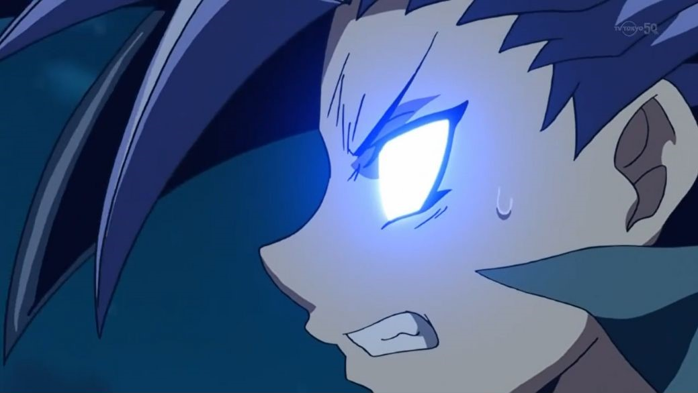 de
Yuto et ses hurlements horribles.
Personne ne pouvait expliquer ce qui arrivait au jeune homme.
Shark: C'est quoi ce bordel !?
Disait Shark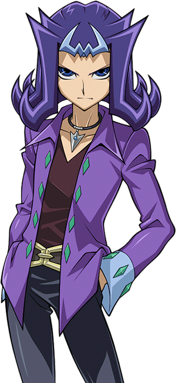,
ne comprenant pas ce qui se passait.
Kotori: Qu'est-ce qui ne va pas avec Yuto !? Pourquoi ses yeux brillent-ils comme ça !?
Demanda Kotori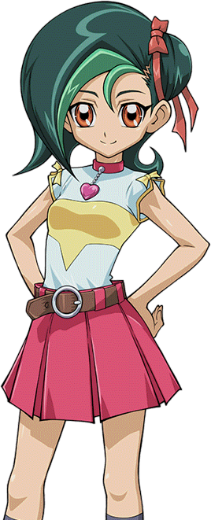, ne sachant pas trop quoi penser.
Ruri s'est alors précipitée vers Yuto, espérant pouvoir lui parler en le tenant dans ses bras.
s'est alors précipitée vers Yuto, espérant pouvoir lui parler en le tenant dans ses bras.
Ruri: Yuto ! Tu m'entends !? C'est Ruri, je suis juste là ! Parle moi Yuto !
C'était inutile, Yuto avait trop mal pour enregistrer sa présence. Yuma se tourna alors vers Astral
se tourna alors vers Astral .
.
Yuma: Astral, qu'est-ce qui lui arrive !?
Il demanda, espérant que son ami aurait une réponse.
Astral: Je peux sentir une grande noirceur se battre à l'intérieur de la conscience de Yuto. Elle menace sa vie. Je ne vois qu'une seule personne qui pourrait être responsable...
Yuma était sur le point de demander de qui cela pourrait être, c'est alors qu'il venait de réaliser.
Yuma: Attends, tu veux dire que c'est... !?
Astral acquiesça.
Astral: Ça ne peut-être que "lui".
Répondit-il sinistrement.
Yuto: Gaaaaaaaaahhhhhhhhhh !!!
Ruri: Yuma ! Astral ! S'il vous plaît, fais quelque chose !
Ruri a supplié désespérément alors que Yuto tombait sur le dos et criait encore plus.
Kotori: Attends, Ruri sait pour Astral ? Et elle peut le voir ?
Kotori se demanda dans son esprit, surprise. Elle ne se souvenait pas que Ruri ait mentionné quoi que ce soit à propos d'Astral lors de leurs précédentes discussions.
Elle se demandait si Yuto le savait aussi. Shark et Rio ,
ainsi que Gauche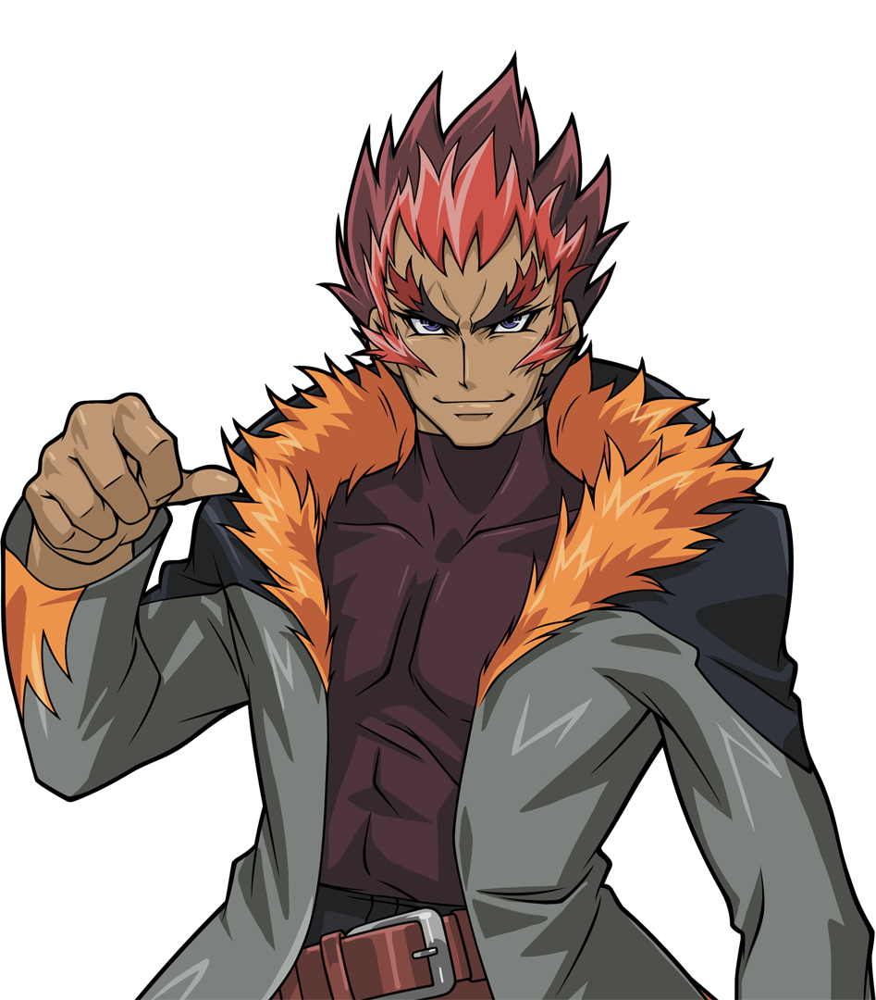
et Droite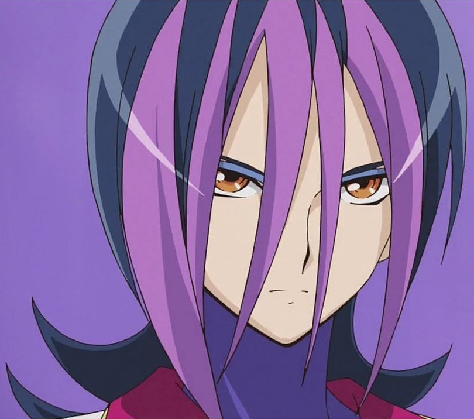, étaient tout aussi perplexes.
Akari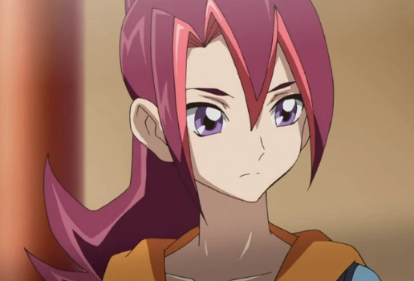 n'avait aucune idée de qui était Astral,
encore moins de pouvoir le voir.
,
ainsi que Gauche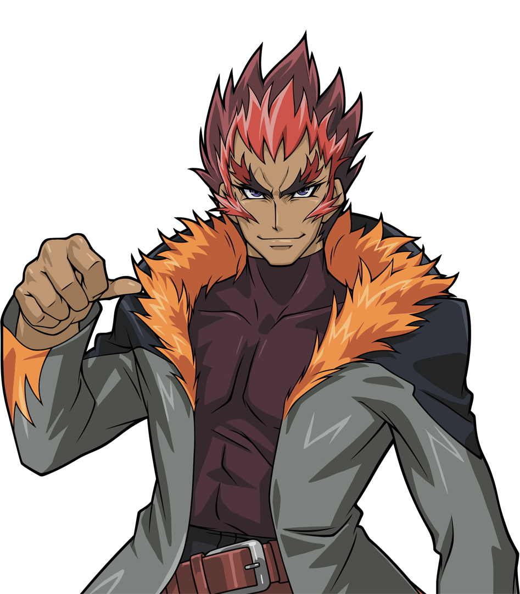
et Droite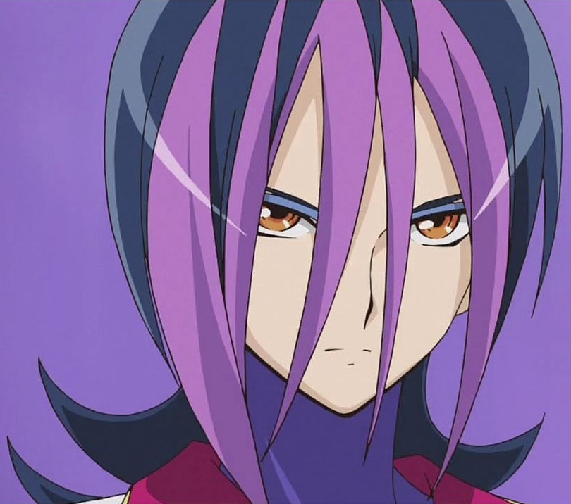, étaient tout aussi perplexes.
Akari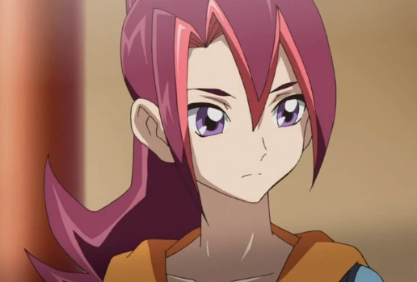 n'avait aucune idée de qui était Astral,
encore moins de pouvoir le voir.
Yuma: Y a-t-il un moyen d'aider Yuto !?
Yuma a demandé.
Astral a réfléchi et a remarqué quelque chose qu'il n'avait pas remarqué auparavant. Le bracelet de Ruri clignotait en jaune pendant qu'elle tenait Yuto. Il a ensuite regardé la Cle de l'Empereur
clignotait en jaune pendant qu'elle tenait Yuto. Il a ensuite regardé la Cle de l'Empereur sur le cou de Yuma, qui clignotait aussi faiblement en or. Avec ces nouveaux détails, il a mis au point un plan. Il n'était pas sûr qu'il fonctionne, mais il devait
l'essayer.
sur le cou de Yuma, qui clignotait aussi faiblement en or. Avec ces nouveaux détails, il a mis au point un plan. Il n'était pas sûr qu'il fonctionne, mais il devait
l'essayer.
Astral: J'ai une idée ! Yuma, Ruri, maintenez Yuto à terre ! Je m'occupe du reste !
Astral donna ses instructions. Aussitôt dit, le jeune garçon et la fille plus âgée tinrent fermement leur ami sur le dos et essayèrent de le maintenir aussi immobile que possible.
Astral a ensuite placé ses deux mains sur la poitrine de Yuto, juste au-dessus de son cœur. Il a ensuite fermé les yeux et a commencé à se concentrer. Il a utilisé son propre pouvoir pour attirer les énergies pures émanant la Clé de Yuma et du bracelet de Ruri, qui ont commencé à briller plus fort. Leurs lueurs brillantes ont commencé à couvrir Yuto, qui semblait essayer de résister en se débattant plus violemment.
Ruri: Yuto, s'il te plaît, accroche-toi !
Ruri disait, alors que le processus inconnu continuait.
Yuma: Que fais-tu Astral ?
Astral: J'essaie de libérer Yuto des ténèbres qui le blessent. Continue de le maintenir.
Astral s'est concentré plus fort, alors que les ténèbres ont commencé à lutté.
Astral: Tu es une force puissante,
Zarc . Mais dans ton état actuel et séparé, tu ne peux pas espérer l'emporter sur quelqu'un comme moi.
. Mais dans ton état actuel et séparé, tu ne peux pas espérer l'emporter sur quelqu'un comme moi.
Pensait Astral avec confiance. Au fil des secondes, tout le monde a vu quelque chose d'autre qui a fait tomber leurs mâchoires.
En utilisant les pures énergies combinées de ses amis, Astral a commencé à extraire une forme sombre hors du corps de Yuto. Au début, c'était indiscernable, sans forme.
Le cri de Yuto s'est intensifié. Quelques secondes plus tard, lorsque les ténèbres ont été retirées, et se tenaient au-dessus de tout le monde, elles ont pris la forme d'un
enorme dragon sombre avec des yeux bleus
foncés... les mêmes yeux brillants que Yuto.
avec des yeux bleus
foncés... les mêmes yeux brillants que Yuto.
Rio: Qu'est-ce que c'est que ça !?
Rio a attrapé le bras de son frère très fermement en voyant la bête.
Shark: Je n'en ai aucune idée.
Répondit ce dernier.
Ce dragon sombre était maintenant contenu dans une sphère dorée, formée par les mains maintenant tendues d'Astral.
Astral: Par le pouvoir du Monde Astral, tu n'existe... plus !
Déclara Astral en frappant bruyamment dans ses mains.
La sphère d'or brilla alors de mille feux et le dragon noir emprisonné rugit de douleur et de mépris. Lorsque le dragon fut complètement obscurci par la lumière, la sphère et le dragon explosèrent dans une pluie d'étincelles lumineux. Au même moment, les cris de Yuto se sont arrêtés et ses yeux ont cessé de briller, revenant à la normale. Le pauvre garçon s'est alors évanoui, épuisé par l'épreuve qu'il venait de subir. Tout était silencieux maintenant. Personne ne dit un mot pendant un très long moment.
Yuma: Astral, ça a marché ?
Demanda Yuma.
Ruri: Est-ce que Yuto va s'en sortir ?
Ruri a demandé, les yeux remplis de larmes. Astral les regarda tous les deux et sourit.
Astral: Oui, je crois que Yuto est maintenant hors de danger.
Il le disait, l'air très sûr de lui.
Ruri: Merci.
Ruri chuchota à peine, en serrant son petit ami inconscient dans ses bras, laissant échapper des larmes de soulagement. Yuma et Astral se sont souri l'un à l'autre, sachant que Yuto irait bien maintenant.
Shark: Yuma... tu as oublié de nous mentionner quelque chose à propos de tes nouveaux amis ?
Demanda Shark.
Yuma grimaça, sachant qu'il devait se confesser maintenant. Kotori, Rio, Akari, Gauche, et Droite semblaient aussi vouloir des réponses.
Yuma: Euh, eh bien... c'est une longue histoire... en quelque sorte...
Akari et Yuma ont ramené Yuto dans leur maison et l'ont allongé sur le lit de Yuma pour qu'il se repose. Yuto a dormi là le reste de la journée et toute la nuit. Le lendemain matin, il n'avait toujours pas bougé le moins du monde. À cause de cet incident, Akari a décidé de reporter le voyage en camping. Elle savait que personne n'en profiterait si Yuto ne se rétablissait pas. Yuma a insisté pour dormir dans sa chambre au cas où il arriverait encore quelque chose à Yuto. Akari a accepté, décidant que Ruri dormirait avec elle pour la nuit. Plus tard, alors que Yuma s'est finalement endormi, il a été rudement réveillé par Astral.
Astral: Yuma, réveille-toi ! Ton
D Pad clignote !
clignote !
Il le disait avec urgence. À ce moment-là, Yuma s'est réveillé.
Yuma: Quoi !? Sérieusement !? D'abord Yuto qui se fait attaquer par Zarc, et maintenant ça !
Il s'est levé d'un bond et a ramassé son D-Pad. Il pensait qu'il s'agissait d'un signal de détresse, mais il soupira de soulagement quand il vit qu'il clignotait en vert.
Yuma: Ouf, c'est bon. C'est juste le signal de récupération
dDisait Yuma d'une voix beaucoup plus calme.
Astral: Cela signifie que l'un de nos amis a réussi sa mission et demande à être récupéré. Regarde de qui il s'agit.
Astral a conseillé. Lorsque Yuma a touché l'écran central, celui-ci a montré un hologramme des initiales "E.H." en rouge vif.
Yuma: C'est
Judai ! Il a dû faire sortir
Serena
! Il a dû faire sortir
Serena d'Academia.
d'Academia.
Disait Yuma avec excitation.
Astral: Excellent. Dans ce cas, je vais aller les chercher et les déposer dans le Monde de Judai.
Akaba Leo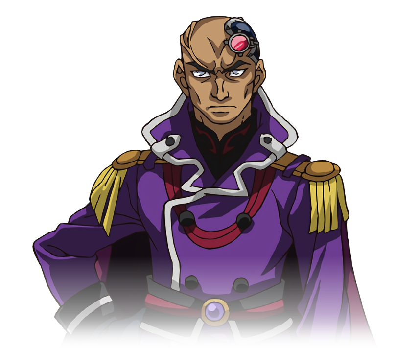
ne les atteindra jamais là-bas.
Astral lui disait, se qui inquiétait Yuma.
Yuma: Attends. Je ne devrais pas venir avec toi ?
Demanda Yuma. Astral secoua la tête.
Astral: Je peux m'en occuper moi-même. Tu as besoin de te reposer. Aussi, tu devrais être ici au cas où quelque chose arriverait à Yuto en mon absence. Ce ne sera
pas très long. Je devrais être de retour dans une heure environ.
Yuma acquiesca et Astral rentra dans la Clef.
Yuma est ensuite passé sans bruit par la fenêtre et est monté sur le toit. Il a levé la Clef et dans un éclair lumineux,
l'enorme vaisseau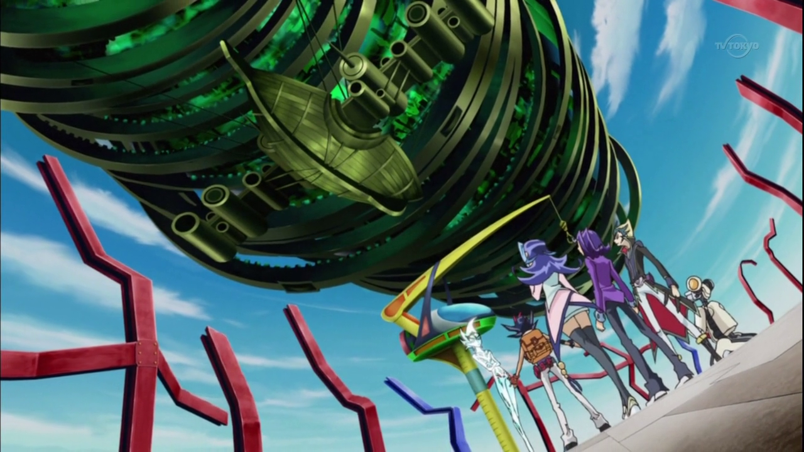
s'est envolé dans le ciel et a disparu. Après cela, Yuma s'est allongé sur le toit, sous le ciel étoilé, et a attendu le retour d'Astral. Pendant son absence, Yuma a reçu un message de
Yusei disant
que sa mission était un succès.
disant
que sa mission était un succès.
Environ une heure et demie plus tard, l'Ijigen Hikosen est finalement revenu et s'est retrouvé à l'intérieur de la Clé des Empereurs. Quand il s'est montré à nouveau, Astral avait l'air content.
Yuma: Hey. Comment ça s'est passé ?
Demanda le jeune garçon.
Astral: Ça s'est bien passé, en grande partie. Judai et Serena vont bien et sont en sécurité, ainsi que plusieurs autres personnes.
Yuma: D'autres personnes ?
Yuma a demandé, curieux.
Astral: Il y avait un groupe de Duellistes qui avait besoin d'être secouru en plus de Judai et Serena. Je dois mentionner que l'un d'entre eux n'est autre que
Sakaki Yusho .
.
Yuma: Le père de
Yuya ? Oh, c'est vrai ! Il était dans la dimension Fusion lui aussi.
? Oh, c'est vrai ! Il était dans la dimension Fusion lui aussi.
Haleta ce dernier tout en se souvenant.
Astral: Oui. Je laisserai Judai expliquer les détails lors de la réunion. Est-ce que quelque chose s'est passé en mon absence concernant Yuto ? Ou d'autres
signaux de nos amis ?
Demanda Astral.
Yuma: Rien de
Yugi pour le moment. Mais j'ai reçu un message de Yusei. Il est retourné dans son monde avec
Yugo
pour le moment. Mais j'ai reçu un message de Yusei. Il est retourné dans son monde avec
Yugo et Rin
et Rin . Quant à Yuto, il dort encore comme un bébé.
. Quant à Yuto, il dort encore comme un bébé.
Répondit Yuma.
Astral: Comment Yusei, Yugo et Rin sont-ils arrivés là-bas sans notre aide ?
Astral a demandé, déconcerté par cette nouvelle.
Yuma: Yusei a dit qu'il expliquerait plus tard lors de la réunion. Mais il a dit que tout le monde allait bien.
Astral: Très bien. Merci de m'en avoir informé Yuma.
Très heureux de cette nouvelle, Astral est retourné à l'intérieur de la Clé. Yuma, heureux que deux de ses amis aient atteint leurs objectifs comme lui, retourna à l'intérieur et se remit au lit pour une bonne nuit de sommeil.
Plus tard, le matin est arrivé et s'est transformé en après-midi. Yuto dormait toujours. Ruri s'est assise sur une chaise à côté de lui, insistant sur le fait qu'elle
serait là quand il se réveillerait. Après avoir laissé Ruri et Haru veiller sur Yuto, le frère, ainsi que la grande soeur Tsukumo sont retournés en bas où tout le monde attendait. Shark, Rio, et Kotori sont tous revenus pour vérifier
comment Yuto allait. Gauche et Droite étaient là aussi, avec quelqu'un que Yuma et Astral ont été très surpris de voir.
veiller sur Yuto, le frère, ainsi que la grande soeur Tsukumo sont retournés en bas où tout le monde attendait. Shark, Rio, et Kotori sont tous revenus pour vérifier
comment Yuto allait. Gauche et Droite étaient là aussi, avec quelqu'un que Yuma et Astral ont été très surpris de voir.
Devant Yuma se tenait un grand jeune homme aux yeux bleu pâle, aux cheveux blonds avec une frange vert, et portant des vêtements de couleur sombre. Il venait de passer la porte d'entrée avec Gauche et Droite.
Yuma:
Kaito !
!
Yuma le disait avec surprise, ne s'attendant pas à ce que son ami et plus grand rival, Kaito Tenjo, se présente à sa maison.
Yuma: Qu'est-ce que tu fais ici ?
Kaito: Droite m'a appelé et m'a raconté ce qui s'est passé. Elle a pensé que ce serait quelque chose que je devrais savoir.
Kaito a dit, en regardant Droite. Elle a hoché la tête, tout en regardant ailleurs.
Shark: Comment va-t-il ?
Akari: Yuto est toujours en train de dormir. Il n'y a plus de signes de douleur. Ruri nous fera savoir quand il sera réveillé.
Disait Akari. Cela a soulagé la plupart des membres du groupe.
Kotori: Après ce qu'il a traversé hier, je ne suis pas surprise qu'il soit encore dans les vapes.
Rio: Je n'arrive toujours pas croire ce que Yuma et Astral nous ont révélés à leur sujet hier.
Rio avoua, en ayant l'air très triste.
Kaito: D'après ce que j'ai entendu, ces deux-là ne sont pas des personnes typiques. Alors Yuma, quelle est leur histoire ?
Kaito a demandé, curieux de savoir ce qu'ils avaient à faire face cette fois-ci.
Après s'être assis et avoir pris une respiration, Yuma a tout raconté à Kaito.

Pendant que Yuma déballait son histoire à Kaito en bas, Ruri et Haru veillaient sur Yuto pendant son sommeil.
Haru: Il semble toujours se reposer paisiblement, d'après ce que j'ai entendu.
Ruri: J'espère que c'est toujours le cas. Merci pour votre aide, Haru-san.
Ruri disait doucement. La vieille dame souria chaleureusement à la jeune fille.
Haru: Oh, ce n'est rien, ma chère. J'aime bien ce jeune homme aussi, surtout qu'il est beau.
Les deux femmes gloussèrent.
Haru: Eh bien, je pense que nous avons fait tout ce que nous pouvions. Nous devons juste continuer à attendre et voir. Si tu as besoin de moi, Ruri, je vais faire un peu de lessive dans le hall.
Ruri hocha la tête tandis que Haru sortait. Il n'y avait plus qu'elle et son petit ami endormi dans cette chambre.
Ruri baissa les yeux vers Yuto, qui semblait en effet plus en paix qu'elle ne l'avait jamais vu. Même si elle savait qu'il irait bien, elle s'inquiétait de ce qui
avait causé sa douleur. Elle se demandait si cela avait quelque chose à voir avec son lien "sombre" avec
Yuri . Yuma et Astral n'avaient toujours pas
expliqué ce lien, ni pourquoi le Professeur d'Academia avait besoin d'elle pour ranimer un de ses proches. S'il avait besoin de la vie d'une autre personne en échange, pourquoi
l'avait-il choisie parmi toutes les personnes ? Ruri a entendu qu'elle et Yuto devaient attendre toute l'histoire, mais elle commençait à en avoir assez d'attendre.
Elle a alors pris la main de Yuto et l'a tenue dans les siennes.
. Yuma et Astral n'avaient toujours pas
expliqué ce lien, ni pourquoi le Professeur d'Academia avait besoin d'elle pour ranimer un de ses proches. S'il avait besoin de la vie d'une autre personne en échange, pourquoi
l'avait-il choisie parmi toutes les personnes ? Ruri a entendu qu'elle et Yuto devaient attendre toute l'histoire, mais elle commençait à en avoir assez d'attendre.
Elle a alors pris la main de Yuto et l'a tenue dans les siennes.
Ruri: Je suis tellement confuse, Yuto. Je veux juste savoir ce que tout cela signifie, et pourquoi cela nous concerne. Tout s'est passé si vite que c'est complètement fou. Nous sommes là, dans un endroit qui ressemble à ce qu'était notre maison, et personne ne nous connaît. Nous sommes les seuls à venir d'un autre monde, à part Astral. Je voudrais juste que nous ayons des vies normales comme tout le monde.
Elle a ensuite ri, mais pas une once d'humour dedans, tout en regardant son bracelet.
Ruri: Mais nous ne sommes pas normaux, n'est-ce pas ? Je veux dire, j'ai un bracelet qui a brillé pour des raisons que je ne peux pas expliquer et tu as eu une
énorme créature sombre extirpé de l'intérieur de toi. Rien de tout cela n'a de sens, n'est-ce pas ?
Ruri se demanda, sans attendre de réponse.
Yuto: Non, pas le moins du monde.
Ruri s'est retournée pour voir que Yuto s'était enfin réveillé et lui a souri en se redressant.
Ruri: Yuto !
Ruri l'a pris dans ses bras et a pleuré doucement. Yuto lui a tapoté le dos pendant qu'ils se serraient l'un contre l'autre.
Yuto: Je vais bien maintenant, Ruri. Tout va bien se passer.
Il lui a assuré avant de l'attirer dans ses bras pour un doux et chaleureux baiser. Derrière la porte de la chambre, Haru souria au couple avant de s'éloigner en silence.
En bas, Yuma mettait Kaito au courant des événements récents. Il lui a dit qui étaient Yuto et Ruri, d'où ils venaient vraiment, et comment et pourquoi lui et Astral les ont amenés ici à Heartland. La réaction de Kaito a été la même que les autres quand il leur a dit...
Début du Flashback
Lorsque Yuma a fini de tout révéler, sa sœur et ses amis avaient tous les yeux écarquillés par le choc et l'horreur. Il a fallu un moment avant que quelqu'un ne parle de nouveau. Alors qu'Akari, Gauche, et Droite étaient sans voix à cause des révélations, les autres ne l'étaient pas.
Kotori: Je ne peux pas le croire.
Kotori disait choquée, ses mains couvrant sa bouche.
Rio: Ils venaient tous les deux d'un Heartland comme le nôtre, seulement...
Rio n'a pas pu finir, trop attristée par les détails horribles. Elle était au bord des larmes.
Shark: Je sais. Bordel.
Shark le disait doucement. Maintenant il comprenait pourquoi Yuto et Ruri ne voulaient pas parler de leur ancienne maison, et pourquoi Akari leur avait interdit de
demander.
Shark: Honnêtement, je ne sais pas ce qui me choque le plus. Le fait qu'une version de notre maison ait été anéantie par des Duellistes fou alliés et recevant des
ordres d'un maniaque sans cœur, ou que Yuto fasse partie d'un mal qui a essayé de détruire le monde.
Il le disait avec incrédulité. Akari, Gauche, et Droite étaient trop muets pour dire quoi que ce soit.
Yuma: Ce n'est pas vrai ! Je veux dire, la partie concernant Yuto !
Yuma disait, défendant son nouvel ami.
Shark: C'est à dire ?
Demanda ce dernier.
Astral: Cela veut dire que Yuto n'est plus une menace pour lui-même ou pour les autres. En utilisant l'énergie combinée de la Clé de Yuma et du bracelet de Ruri, j'ai réussi à extraire l'âme sombre de Zarc du corps de Yuto et à la détruire.
Fin du Flashback
Kaito est resté silencieux pendant un long moment. Il pensait honnêtement que les choses ne seraient pas plus bizarres après la guerre avec les Barians. C'est une toute autre boîte de Pandore que Yuma a ouverte par inadvertance.
Kaito: Alors, ce Zarc... il est parti maintenant ?
Demanda t-il après avoir laissé couler l'histoire.
Astral: Seulement son fragment à l'intérieur de Yuto. Pour autant que nous le sachions, ses homologues des autres dimensions ont toujours leurs fragments qui les relient à Zarc. Mais nous avons fait une découverte importante aujourd'hui.
Rio: Quelle découverte ?
Demanda cette dernière.
Astral: Nous venons d'apprendre qu'il y a un moyen d'arrêter Zarc pour de bon. Quand il a été séparé, c'était pour que ses fragments ne puissent pas se retrouver dans les autres dimensions. Bien sûr, Zarc lui-même existait toujours et pouvait donc apprendre quand il allait réssuciter. Mais maintenant, nous avons une solution plus permanente. Si les homologues de Ruri utilisaient leurs bracelets ainsi que les pouvoirs uniques des Duellistes envoyés pour les protéger...
Kotori: Les autres fragments de Zarc seraient également détruits, ce qui l'éliminerait une fois pour toutes.
Kotori termina l'explication d'Astral, qui acquiesca.
Astral: Exactement.
Astral s'est ensuite tourné vers Yuma.
Astral: Yuma, nous devons en parler aux autres lors du rassemblement.
Yuma: Oui, absolument !
Répondit Yuma énergiquement.
Shark: Un rassemblement ?
Shark demanda. Cela attira l'attention de tout le groupe.
Yuma: Avant de partir pour nos propres missions, nous avons tous convenu de tenir une réunion avec les alters-egos dimensionnels que nous avons secourus afin qu'ils puissent entendre parler de leur véritable origine en même temps.
Kaito: Comment sauras-tu la date de cette rencontre à venir ?
Demanda ce dernier.
Yuma: L'un d'entre nous enverra un signal aux autres pour leur dire que c'est le moment de la réunion. Ce sera un...
Yuto et Ruri: Kaito ?
Yuma et tous les autres ont levé les yeux pour voir Yuto et Ruri descendre les escaliers. Le couple fut plus que surpris de voir quelqu'un qui leur était familier alors qu'ils atteignaient le rez-de-chaussée.
Yuma: Yuto ! Comment te sens-tu ?
Demanda tout de suite Yuma, attirant l'attention de ce dernier.
Yuto: Beaucoup mieux maintenant, grâce à vous les gars. Ruri m'a raconté ce qu'elle, toi et Astral avez fait pour moi. Je vous en suis reconnaissant.
Il le disait, souriant au garçon et à son ami luminescent.
Yuma: Aw, n'en parle pas mon pote !
Yuma a répondu joyeusement.
Astral: Ta vie valait la peine d'être sauvée.
Astral a ajouté.
Kaito s'est éclairci la gorge, attirant à nouveau l'attention de tout le monde.
Kaito: Vous devez être Yuto et Ruri, non ?
Kaito a demandé au couple, qui hochèrent la tête.
Kaito: Alors répondez à cette question. Comment avez-vous su mon nom quand vous m'avez vu ? Je sais que nous ne nous sommes jamais rencontrés auparavant.
Yuto et Ruri se sont regardés nerveusement. Astral leur avait dit qu'ils rencontreraient ici une personne qui ressemblait à quelqu'un qu'ils connaissaient chez eux. Mais ils ne s'attendaient pas à ce que ce soit Kaito Tenjo.
Yuto: Oh, euh. Eh bien, c'est juste que... nous t'avons pris pour quelqu'un que nous...
Yuto commença à improvisé, mais Kaito interrompit. Il avait une idée de comment ils avaient su et voulait voir leurs réactions.
Kaito: Il y a un autre moi là d'où vous venez, n'est-ce pas ? Un autre Kaito qui vit une vie différente dans votre propre Heartland ?
Comme il s'y attendait, Yuto et Ruri avaient l'air à la fois stupéfaits et totalement confus. Tous les autres l'étaient aussi.
Ruri: Quoi !? Co-Comment as-tu su ?
Demanda Ruri timidement. Ceci confirma la question de Kaito, qui cachait lui aussi sa propre surprise à cette nouvelle.
Kaito: Yuma nous a tout raconté. Si vous venez tous les deux d'une autre version de Heartland et que vous m'avez clairement reconnu, alors il est logique de penser qu'un autre version de moi-même doit être là-bas aussi.
Yuto et Ruri ont fixé Yuma, qui a baissé les yeux un peu honteux.
Yuma: Désolé les amis, je devais leur dire. Comment ne pas le faire ? Ils ont tous vu ce qui s'est passé, mis à part Kaito.
Mais le couple secoua la tête.
Yuto: C'est bon Yuma. Tu n'as pas à t'en faire. Ne t'inquiète pas pour ça.
Répondit Yuto.
Ruri: Honnêtement, nous ne savions pas combien de temps nous aurions pu garder notre secret de toute façon. Je suis juste contente que ce soit parmi ta famille et tes amis.
Ruri a ajouté. Yuma s'est alors senti légèrement mieux.
Shark: Attendez une minute ! Il y a un autre Kaito dans votre Heartland !? Comment c'est possible !?
Shark demanda sous le choc.
Kotori: Oui, et, y a-t-il d'autres versions de nous là-bas aussi ? Y compris Yuma ?
Kotori demanda, également surprise par cette nouvelle information. Yuto et Ruri secouèrent tous deux la tête.
Yuto: Désolé, mais de tous ceux que nous avons rencontrés ici, Kaito est le seul que nous connaissons chez nous.
Répondit Yuto. Cela a légèrement déçu et désorienté le reste du groupe. Le sujet d'un Heartland alternatif a amené Rio à offrir sa sympathie.
Rio: Ecoutez les amis. Nous sommes vraiment désolés de ce qui s'est passé. Pour votre propre Heartland, je veux dire.
Rio le disait tristement. Yuto et Ruri avaient l'air triste eux aussi.
Kotori: Je ne peux pas imaginer ce que ça a dû être... de voir sa maison attaquée et détruite... de voir tout en ruine. Si cela arrivait ici, je...
Kotori répondit avec beaucoup de chagrin.
Yuto: Sois heureuse de ne pas avoir à le faire.
Yuto le dit doucement.
Shark: Ce type, Akaba Leo... J'ai vraiment envie de lui botter le cul, même si ce n'est pas notre Heartland qu'il a attaqué
Admis Shark avec colère.
Yuma: Toi et moi, tous les deux, on est plus que d'accord.
Ajouta Yuma.
Kaito: On est donc trois à pensé la même chose.
Kaito le disait aussi.
Astral: Akaba Leo a commis de nombreux crimes horribles. Ceux-ci ne resteront pas impunis.
Astral a assuré le trio. C'est alors que les trois personnes qui étaient restées silencieuses pendant tout ce temps avaient enfin pû reprendre la parole.
Gauche: Tout ceci est tellement bizarre, même après avoir appris pour Astral et les Barians. Mais quand même, je suis sûr d'une chose : Akaba Leo a besoin d'un
sérieux retour à la réalité ! J'espère que vous, les gars, puissiez lui donner ce qu'il mérite !
Gauche a déclaré passionnément, tout en fixant Yuma et Astral.
Droite: Je suis d'accord avec ça.
Droite le disait.
Akari soupira avant d'avoir son mot à dire sur la question.
Akari: Je ne comprends toujours pas la moitié de ce qui se passe, je l'admets. Mais quelqu'un qui détruit une ville pleine de bonnes personnes pour des raisons égoïstes doit recevoir ce qui lui arrive ! Pour Yuto et Ruri, j'espère vraiment qu'il aura la punition qu'il mérite !
Yuma et tout le monde ont souri des paroles de sa grande sœur. Yuto et Ruri se sont souri l'un l'autre en se tenant la main, impatients d'obtenir réparation et justice pour leur maison en ruine.
Comme ils le faisaient, personne n'a remarqué la façon dont Rio regardait le couple, puis, se tournait vers Yuma. Ou plutôt, presque personne. Ruri a eu un regard rapide avant que Rio ne se détourne. Elle a compris de quoi il s'agissait. Akari soupira à nouveau.
Akari: Eh bien, je suppose que cela signifie que le voyage de camping est annulé.
Cette dernière le disait tristement. La plupart des membres du groupe ont sursauté.
Rio: Pourquoi l'annuler ? Je pensais que vous ne faisiez que le reporter ?
Rio a demandé, surprise par l'annonce.
Akari: Évidemment. Avec ce qui se passe maintenant, ce n'est peut-être pas le meilleur moment.
Expliqua Akari.
Yuto: Je ne suis pas d'accord.
Yuto le disait.
Yuto: Nous devons garder le moral, même dans les pires moments. Si nous ne le faisons pas, la vie ici ne sera pas différente de la vie dans notre Heartland.
Il a dit en regardant sa petite amie, qui hocha la tête.
Ruri: C'est vrai. Des choses comme ce voyage en camping sont nécessaires pour aider les gens à oublier leurs problèmes et sont bonnes pour le cœur et l'âme. On ne peut pas l'annuler, Akari-san.
Yuma, Kotori, et Rio étaient d'accord. Shark a accepté à contrecoeur aussi. Après d'autres encouragements des autres, y compris Kaito, Akari changa d'avis.
Akari: D'accord. Vous avez tous raison. Le voyage en camping est donc de retour.
Cela a remonté le moral de presque tout le monde (Shark n'était toujours pas un fan mais il ne pouvait pas dire non à ce stade).
Akari: Ceci étant dit, je suggère qu'après le dîner nous commencions tous à faire nos bagages et à nous coucher tôt pour demain.
Plus tard, après un repas très agréable préparé par Haru, presque tout le monde est reparti vers leurs propres maisons. Gauche et Droite souhaitaient venir au camping, mais ils avaient d'autres plans. À la surprise de tous, Kaito a décidé de venir aussi, et peut-être amener son petit frère. Les seuls qui n'étaient pas encore partis étaient Kotori et les frères Kamishiro.
Kotori:Je vous verrai demain matin les amis !
Kotori disait joyeusement en partant.
Comme Shark et Rio étaient sur le point de partir aussi, Rio s'est arrêté juste à côté de la porte.
Rio: Ryoga, pars devant. Je te retrouverai à la maison plus tard.
Cela a surpris son frère.
Shark: Hein ? Pourquoi plus tard Rio ?
Rio: J'ai juste besoin de parler à Ruri de quelque chose. C'est une discussion entre fille.
Elle répondit. Shark soupira, sachant que c'est tout ce qu'il avait besoin de savoir.
Shark: Bien, peu importe. Si tu n'es pas rentrée dans l'heure qui suit, je reviendrai te traîner à la maison.
Il se plaignit tout en s'éloignant. Rio gloussa à l'attitude de son frère. Quand il était hors de vue, elle est allée trouver Ruri, qui semblait se diriger vers l'étage.
Rio: Hey Ruri. Est-ce qu'on peut parler un peu dehors, juste tous les deux ?
Rio demanda à sa nouvelle amie.
Ruri: Oui, bien sûr.
Ruri a dit, sachant ce qui était dans l'esprit de la fille aux cheveux bleus. Après avoir marché dehors, les deux filles se sont assises sur le porche d'entrée.
Ruri: Alors, de quoi voulais-tu parler ?
Rio semblait incertaine de la façon de commencer.
Rio: Quand tu as rencontré Yuto pour la première fois, comment t'es-tu sentie ? Est-ce qu'il y a eu un déclic et tu as compris qu'il était fait pour toi ? Ou
était-ce quelque chose qui... s'est développé avec le temps ?
Elle demanda timidement.
Ruri: Tu aimes Yuma, n'est-ce pas Rio ?
Ruri a demandé, surprenant l'autre fille. Rio rougit un peu et eut l'air en conflit alors qu'elle regardait à ses pieds.
Rio: Suis-je vraiment si évidente que ça ?
Elle a demandé. Ruri gloussa.
Ruri: Pas vraiment. C'était facile pour moi parce que la façon dont tu regardais Yuma avant était la même façon que Yuto me regarde. Mais je pensais que tu
trouvais Yuma ennuyeux ?
Ruri a demandé, faisant soupirer Rio.
Rio: Oui, mais seulement quand il ne s'adresse pas à moi par mon nom. D'autres fois, il est gentil, courageux, et prêt à se mettre en danger pour sauver ceux qu'il
aime. Il nous a aidés, mon frère et moi, de nombreuses fois. Je suppose qu'avec le temps, j'ai commencé à l'apprécier. En plus...
Elle enchaîna, avec un petit sourire.
Rio: Il est plutôt mignon.
Ruri souria avec elle.
Rio: Et maintenant, récemment...
Ruri: Tu as commencé à avoir des sentiments plus forts pour lui.
Ruri termina sa phrase pour elle. Rio hocha la tête, toujours en regardant vers le bas.
Ruri: As-tu dit à Yuma ce que tu ressentais pour lui ?
Rio a alors secoué la tête.
Rio: Non, et je ne pense pas que je puisse le faire.
Elle dit avec regret.
Ruri: Pourquoi pas ?
Ruri a demandé, ne comprenant pas qu'elle était le problème. Rio a alors regardé Ruri droit dans les yeux.
Rio: Kotori aime aussi Yuma. Elle ne me l'a jamais dit, mais je peux le dire. Elle connaît Yuma depuis plus longtemps que moi et a toujours été à ses côtés avant
que je n'arrive. Si je tente quelque chose, cela pourrait nuire à notre amitié. Je ne veux vraiment pas ça. Je ne suis pas sûr de ce que je dois faire.
Rio se confessa. Ruri a compris le dilemme.
Ruri: Rio, laisse-moi te demander ceci. Je sais que tu ne l'as jamais dit à Yuma, mais sais-tu ce que Yuma ressent pour toi ? Ou pour Kotori ?
Rio: En fait, je pense qu'il nous considère tous les deux seulement comme des amis. Mais peut-être que c'est parce qu'il ne sait rien de nos sentiments à toutes les deux.
Rio expliqua, en se référant à elle-même et Kotori.
Ruri: Donc, Kotori ne lui a pas dit ce qu'elle ressent non plus ?
Rio: Je ne pense pas. Si elle l'avait fait, elle et Yuma se seraient comportés bizarrement l'un envers l'autre.
Rio expliqua. Elle s'est dit que ça devait être le cas, vu comment les deux se sont comportés l'un l'autre.
Rio: Ruri, n'as-tu jamais eu peur qu'une autre fille veuille te voler Yuto ?
Ruri secoua la tête.
Ruri: Non. Yuto et moi nous nous aimons depuis le moment où nous nous sommes rencontrés. Il ne me ferait jamais de mal, et je ne lui en ferais pas non plus. Mais maintenant...
Elle disait avec force.
Ruri: Il s'agit de toi. Toi et de tes sentiments.
Rio a alors baissé les yeux de nouveau.
Ruri: Je n'ai jamais eu un problème comme ça. Je sais comment la plupart des gars me voient, et je leur montre que je ne suis pas juste une fille facile avec
laquelle ils pensent pouvoir marquer des points. Yuma n'est pas comme ça. Il sait quel genre de personne je suis et m'accepte, au moins comme une amie. Je veux
que nous soyons plus que cela, mais en même temps je ne veux pas blesser Kotori.
Rio a dit, en ayant l'air plus déprimé. Ruri a alors mis une main sur l'épaule de son amie.
Ruri: Rio, écoute-moi. Tu ne seras pas heureux tant que tu n'auras pas résolu ce problème d'une manière ou d'une autre. Je pense que tu devrais dire à Yuma tes sentiments pour lui et ensuite entendre ce qu'il ressent. S'il te voit seulement comme un ami, alors tu n'auras pas à t'inquiéter que Kotori soit blessée.
Rio: Mais je serais celle qui sera blessé.
Ruri: Je vais t'aider à gérer ça si cela arrive.
Rio: Et si... Yuma décide qu'il veut être plus que des amis avec moi ?
Rio demanda timidement.
Ruri: Si Kotori n'a rien dit avant, et si Yuma ne ressent pas la même chose envers elle, alors vous deux devriez essayer et voir comment les choses se passent.
Répondit cette dernière.
Rio: Qu'en est-il de Kotori elle-même ?
Rio a demandé, toujours inquiete de ruiner leur amitié.
Ruri: J'aime bien Kotori aussi. Elle semble être une personne très gentille et attentionnée. Si vous deux êtes vraiment amies, alors elle comprendra et vous laissera être heureux.
Rio: Même si elle n'est pas celle qui est avec Yuma ?
Rio a demandé.
Ruri: Il n'y a pas moyen que quelqu'un ne soit pas blessé par des choses comme ça. Quand il s'agit d'amour, tu dois juste prendre une chance et espérer le meilleur.
Ruri a suggéré fortement. Rio a acquiescé, bien que toujours incertaine de ce qu'il faut faire. Voyant cela, Ruri a eu une idée.
Ruri: Hé Rio, tu veux faire un petit duel avant de rentrer à la maison ? Nous n'aurons peut-être pas l'occasion pendant notre voyage. Après tout, pendant le dîner,
Akari a dit "Pas de technologie autorisée pour la durée de notre séjour au camp". Qu'en dis-tu ?
Rio retrouva le sourire et accepta.
Rio: Bien sûr, j'aimerais ça.
Avec cela, les deux filles marchèrent sur le trottoir en face de la maison avant de sortir leurs D-Gazers et Duel Disks.
Rio et Ruri: Duel Disk, Set ! D-Gazer, Set !
Les deux filles déclarèrent.
Voix d'ordinateur: AR Vision, Lien Etabli.
Disait une voix d'ordinateur sortit depuis leurs disques de duel des combattants, alors qu'il créa la nouvelle arène virtuelle.
Rio: Je vais commencer ! C'est mon tour ! Draw.
Turn 1: (Ruri: 4000 LP / Main: 5)(Rio: 4000 LP / Main: 6)
Rio: Je vais commencer par invoquer
“Aurora Wing ”
.
Le premier Monstre de Rio ressemblait à un majestueux oiseau bleu/vert qui semblait briller avec les mêmes couleurs qu'une aurore boréale.

Rio: Ensuite, je joue
“Blizzard Vision ”
. Cette carte Magique peut être activée lorsque je contrôle un Monstre d'attribut EAU ! Je peux maintenant traitée cette carte comme un monstre Normal avec les
mêmes Attributs, Type et Niveau que mon monstre EAU !
Apparût sur le terrain de Rio, un deuxième “Aurora Wing ”,
mais un peu plus pâle... comme de la glace.
Ruri: Elle veut déjà faire une Invocation Xyz.
Pensa Ruri.
Rio: Je superpose mes
“Aurora Wing ”
et “Blizzard Vision ”
de niveau 4 ! Avec ces deux monstres, je construis un réseau superposé ! Xyz Shōkan ! Viens à moi,
“Reichoju Sylphine ” !
Un humanoïde de glace violet clair apparût, et est maintenant prêt à se battre.
Rio: Je pose 1 carte face cachée et je termine mon tour.
Maintenant, viens à moi Ruri !
Rio défia Ruri. Cette dernière lui souria en réponse.
Ruri: Certainement. C'est mon tour. Draw.
Turn 2: (Ruri: 4000 LP / Main: 6)(Rio: 4000 LP / Main: 3)
Ruri ne pensait pas qu'elle devait s'inquiéter d'attaquer le Monstre de son adversaire.
Ruru: Tout d'abord, j'invoque depuis ma main
“Lyrical Luscinia Cobalt Sparrow ”
.
Le Monstre de Ruri ressemble à une jeune fille portant un costume d'oiseau brun.

Ruri: J'active maintenant l'effet de “Lyrical Luscinia Sapphire Swallow ” se trouvant dans ma main. Puisque j'ai sur le terrain un monstre "Lyrical Luscinia" autre que “Sapphire Swallow ” , je peux l'Invoquer Spécialement ainsi qu'un autre monstre "Lyrical Luscinia" de Niveau 1 que j'ai en main. Montre-toi ! “Sapphire Swallow ” ! Et toi-aussi, ma deuxième “Cobalt Sparrow ” !
Ruri a ensuite fait l'Invocation Spéciale d'un autre “Cobalt Sparrow ” et d'un autre nouveau monstre, qui ressemblait au premier sauf que c'était une fille dans un costume d'oiseau bleu.

Rio: Elle ne se retient pas non plus.
Rio se disait à elle-même.
Ruri: Maintenant, l'effet de monstre de
“Cobalt Sparrow ”
s'active. Lorsque qu'elle est invoquée spécialement, je peux prendre en main une autre copie de
“Cobalt Sparrow ”
se trouvant dans mon deck.
Elle a ensuite ajouté son troisième
“Cobalt Sparrow ” dans sa main.
Ruri: Maintenant, je superpose mes deux
“Cobalt Sparrow ”
avec “Sapphire Swallow ”
de niveau 1 !
Oiseaux aux ailes splendides ! Rassemblez-vous sur le champ de bataille et brillez avec éclat ! Xyz Shōkan ! Fonds sur ta proie, rang 1 !
“Lyrical Luscinia Assembly Nightingale ”
!
Le Monstre Xyz de Ruri avait l'apparence d'un oiseau humanoïde féminin avec des plumes bleu clair.

Rio: Aucun Point d'Attaque ?
Rio a demandé, ne pouvant contenir sa confusion.
Ruri: Plus pour longtemps ! “Assembly Nightingale ” gagne 100 points d'Attaque pour chacune de ses Unités superposées. Puisqu'il en a trois, la Puissance d'Attaque de mon Monstre est maintenant de 300 points !
(Lyrical Luscinia - Assembly Nightingale: 0 + 300 = 300 ATK)
Rio: Mais ton Monstre est encore trop faible pour attaquer le mien.
Rio fit remarquer. Mais Ruri continua de sourire.
Ruri: Je n'avais pas prévu d'attaquer ton Monstre en premier lieu. Pour chacune de ses unités superposées, “Assembly Nightingale ” peut t'attaquer directement le même nombre de fois à chaque Battle Phase !
Rio: Elle peut quoi !?
S'exclama Rio.
Ruri: Tu m'as dis de venir à toi Rio, et maintenant je vais le faire ! Battle ! “Lyrical Luscinia Assembly Nightingale ” , Attaque Directe !
Rio tenait bon, alors que le monstre oiseau de Ruri volait vers elle et la frappait trois fois.
(Rio: 4000 LP - (300 x 3) LP = 3100 LP)
Rio: Je pose 2 cartes face cachées et je termine mon tour.
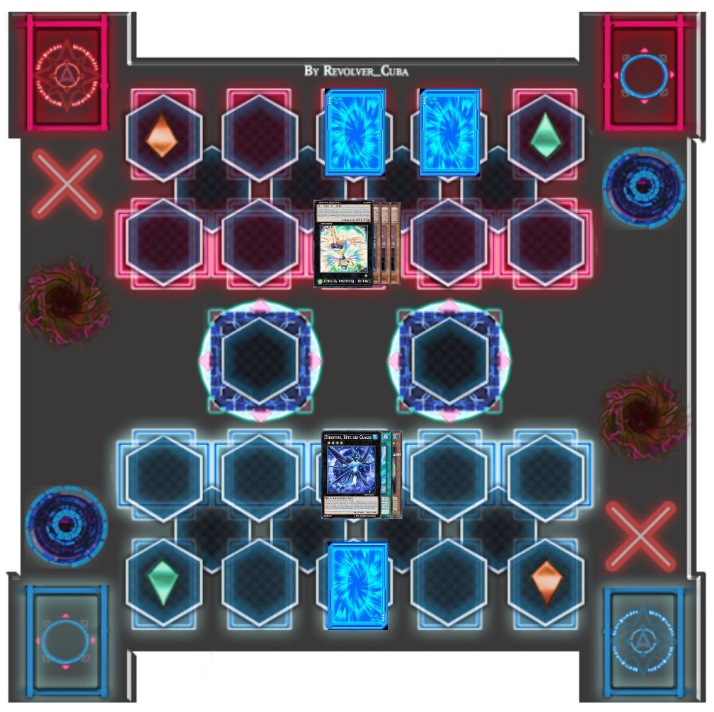
Ruri: Tu vas bien, Rio ?
Ruri a demandé. Rio lui répondit en souriant.
Rio: Crois-moi, j'ai souffert bien pire que ça. Mais maintenant, c'est à moi de jouer ! C'est mon tour. Draw !
Turn 3: (Ruri: 4000 LP / Main: 2)(Rio: 3100 LP / Main: 4)
Ruri avait le sentiment qu'elle serait maintenant en difficulté.
Rio: J'invoque
“Blizzard Falcon ”.
Aux côtés de son compagnon monstre se tenait un faucon bleu et vert qui semblait cristallisé.
Rio: Je l'équipe maintenant avec “Chinmoku no Tsubasa ” . Le monstre Bête Ailée qui en est équipé gagne 300 Points d'Attaque et est immunisé contre les effets des cartes Magie et Piège de mon adversaire !
(Blizzard Falcon: 1500 + 300 = 1800 ATK)
Rio: Et maintenant, j'active l'effet de
“Blizzard Falcon ”
! Lorsque sa Puissance d'Attaque devient supérieure à ses points d'Attaque initiale, je peux t'infliger des dommages égaux à la différence ! C'est 300 points de
dégâts pour toi !
Disait Rio avec confiance.
Ruri glapit un peu quand elle sent un vent de glace la frapper.
(Ruri: 4000 LP - 300 LP = 3700 LP)
Rio: Ce n'est que le début, Battle !
“Blizzard Falcon ”
attaque
“Lyrical Luscinia Assembly Nightingale ”
!
“Blizzard Falcon ” plongea sur
“Assembly Nightingale ”
pour le détruire, mais...
Ruri: Ce ne sera pas si facile ! J'active l'effet de “Assembly Nightingale ” ! En détachant une de ces Unités Superposées, je peux annuler sa destruction au combat ou par un effet. De plus, tous les dommages de combat que je subis sont réduis à 0 !
Une bulle lumineuse entourait “Nightingale ”, la protégeant ainsi que les points de vie de Ruri de l'attaque du monstre adverse.
Rio: Mais en faisant cela, ton Monstre perd 100 Points d'Attaque !
Rio déclara alors que la puissance d'attaque de Rossignol tomba à 200.
(Lyrical Luscinia - Assembly Nightingale: 300 - 100 = 200 ATK)
Rio: De plus, j'avais l'impression que ton monstre possédait un effet de protection, maintenant j'en suis sûr ! J'active l'effet de
“Sylphine ”
! En détachant une Unité Superposée, je peux annuler les Effets de toutes les autres cartes face recto, excepté cette carte sur le Terrain jusqu'à ma prochaine
Standby Phase, puis un des Monstres de mon adversaire perd 300 Points d'Attaque pour chaque carte annulée ! Perfect Freeze !
Ruri: Oh non !
Murmura Ruri alors que son monstre avait maintenant 0 point d'attaque et ne pouvait plus utiliser ses effets de protection.
(Lyrical Luscinia - Assembly Nightingale: 200 -> 0 ATK)
Rio: Prends ça !
“Reichoju Sylphine ”
attaque
“Assembly Nightingale ”
! Ice Ray !
La bête gelée de Rio a commencé à pleuvoir des stalactites de glaces sur le monstre de Ruri. Mais elle n'allait pas se laisser faire.
Ruri: Carte Piège activée !
“Lyrical Luscinia Bird Shield ”
! Lorsqu'un de mes monstre "Lyrical Luscinia" est sur le point d'être détruit au combat, ce monstre n'est pas détruit et les dommages de combat sont réduits de moitié !
Ruri s'arc-bouta alors qu'elle subissait quelques dégâts, mais pas aussi graves que les dégâts qu'elle aurait pu se prendre initialement.
(Ruri: 3700 LP - 1000 LP = 2700 LP)
Rio: Bien joué, Ruri ! Tu es douée, mais tu ne pourras pas gagner. Je termine mon tour.
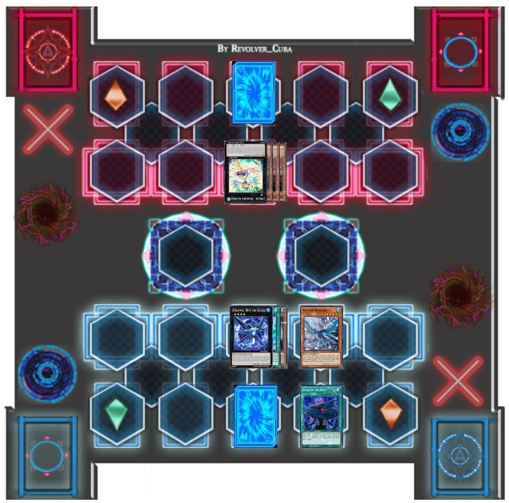Ruri: Tu es forte aussi, Rio ! Quant à la partie sur le fait que je ne vais pas gagner... Je suis sur le point de te prouver le contraire ! A mon tour ! Draw !
Turn 4: (Ruri: 2700 LP / Main: 3)(Rio: 3100 LP / Main: 2)
À ce stade, Ruri sentait qu'elle avait le duel dans sa poche.
Ruri: Je joue “Lyrical Luscinia Bird Strike ” ! Lorsque j'ai un Monstre "Lyrical Luscinia" sur le Terrain, je peux annuler les effets de tous tes Monstres !
Rio: Mince.
Rio maudissait. Elle savait que le Monstre de Ruri avait récupéré tous ses Points d'Attaque et ses capacités maintenant.
(Lyrical Luscinia - Assembly Nightingale: 0 + 200 = 200 ATK)
Ruri: Maintenant, pour mon grand coup ! Carte Piège activée !
“Lyrical Luscinia Bird Power ”
! Cela donne à mon Monstre "Lyrical Luscinia" 1000 Points d'Attaque supplémentaires pour chaque Monstre Bête Ailé sur le Terrain autre que lui-même jusqu'à la End Phase !
Rio: Mes deux monstres sont de type Bête ailée !
Rio réalisa. Ruri hocha la tête avec un sourire confiant.
Ruri: C'est exact Rio !
(Lyrical Luscinia - Assembly Nightingale: 200 + 2000 = 2200 ATK)
Rio a définitivement été prise au dépourvu par ce mouvement.
Ruri: Tes Monstres viennent de rendre les miens encore plus forts ! Avec deux attaques directes de
“Nightingale ”
, ce Duel sera terminé ! Battle !
“Assembly Nightingale ”
, attaque directe !
Le Monstre de Ruri s'est avancé pour achever Rio, mais cete derniere n'avait pas fini de lutter.
Rio: Ce n'est pas encore fini ! Carte Piège activée, “Seinaru Barrier Mirror Force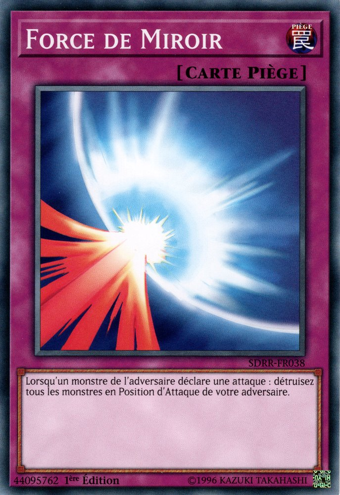 ” ! Ton attaque est maintenant renvoyée et tous tes Monstres en Mode Attaque seront détruits !
Rio déclara, activant sa dernière carte face cachée, mais à son grand étonnement, “Nightingale ” passa directement à travers la barrière qui la protégeait.
Rio: Mais qu'est-ce que ?
Ruri: Le monstre renforcé par
“Bird Power ”
n'est pas affecté par les effets des cartes pièges pour le reste de ce tour. Vas-y
“Assembly Nightingale ”
, Feather Slice !
Rio tressaillit et tomba à genoux face aux deux dernières attaques du Monstre de Ruri.
(Rio: 3100 LP - 2200 LP - 2200 LP = 0 LP)
Malgré sa défaite, Rio se sentait mieux après le duel. Elle s'est relevée quand Ruri s'est approchée d'elle.
Rio: Tu est définitivement une duelliste forte, Ruri. Je n'ai pas rencontré beaucoup de filles qui pouvaient faire des duels aussi bons.
Rio la complimenta alors qu'elle et Ruri se serrèrent la main.
Ruri: Il y a quelques bons duellistes qui sont des filles dans la Résistance. Tu t'intégrerais vraiment bien.
Yuto: Je suis d'accord avec Ruri.
Ruri et Rio se sont tournés pour voir Yuma, Astral, Yuto, Akari et Haru juste à l'extérieur de la porte d'entrée de la maison.
Yuto: Je n'aimerais pas être à la place de celui qui t'affronteras en duel.
Yuto ajouta.
Rio: Depuis combien de temps vous nous regardiez ?
Demanda cette dernière.
Yuma: Nous avons tout vu. C'était un duel génial !
Yuma disait avec enthousiasme. Les deux filles sourièrent de l'éloge de Yuma.
Avant qu'un autre mot puisse être prononcé, le disque de duel de Yuma a commencé à émettre une sorte d'alarme. De plus, l'écran central clignotait en rouge.
Yuma: Astral, regarde ! Est-ce que c'est ce que je pense !?
Yuma a demandé, alarmé. Astral hocha la tête.
Astral: En effet, c'est bien ça. L'un des notres a besoin de notre aide !
Ruri: Attends, que se passe-t-il maintenant ? Qu'est-ce qui se passe avec ton Duel Disk, Yuma ?
Ruri a demandé. Yuma commenca à paniquer.
Yuma: C'est un signal de détresse ! Si l'un de nos disques de duel clignote en rouge comme ça, cela signifie qu'il y a une urgence et que l'un de nous a besoin d'aide au plus vite !
Il cria, faisant sursauter les autres d'inquiétude.
Yuto: Qu'est-ce que tu veux dire par là ?
Demanda Yuto.
Astral: Nous en avons parlé aux autres, mais pas à toi et à Ruri. Akaba Leo est après 3 autres filles aussi, dans les autres dimensions, pas seulement Ruri. A son
insu, certaines personnes se sont rendues sur place pour les protéger. Maintenant il semble que l'une d'entre elles ait besoin d'aide.
Astral a expliqué, surprenant encore plus le couple.
Ruri: Je ne suis pas la seule cible d'Academia ?
Haleta cette dernière.
Rio: Qui envoie le signal ?
Rio a demandé. Yuma toucha l'écran rouge clignotant, révélant un hologramme d'une
pyramide doree renversee avec un oeil au centre .
Aucune des personnes ici présentes ne savait ce qu'était l'objet, mais Yuma et Astral, eux le savaient.
.
Aucune des personnes ici présentes ne savait ce qu'était l'objet, mais Yuma et Astral, eux le savaient.
Astral: C'est
Yugi
! Quelque chose doit se passer dans la Dimension Standard pour qu'il ait besoin de renforts immédiats ! Je suis sûr que
Judai et
Yusei
doivent aussi recevoir le signal en ce moment même !
Déclara Astral. Yuma hocha la tête, totalemment d'accord avec lui.
Yuma: Oui, on doit y aller maintenant ! Plus vite on les récupèrera, plus vite on pourra aller aider Yugi ! Oh, j'allais oublier ! Yuto, hier soir, j'ai relié mon
disque de duel au tien et celui de Ruri aussi. Comme ça, nous pourrons rester en contact. Ok, maintenant on doit vraiment y aller !
Yuma informa au couple, qui furent encore plus surpris en commençant. Puis, Yuma commença à s'enfuir. Il n'est pas allé très loin avant d'être arrêté.
Akari: Attends, tu pars déjà !? Tu viens à peine de rentrer !
Yuma: Je suis désolé Nee-chan (trad: Nee-chan = Grande Soeur), mais mes amis ont besoin de moi ! Je dois y aller !
Disait Yuma avec détermination.
Akari: Yuma, je ne veux pas que tu sois blessé !
Cria t-elle.
Yuma: Je vais m'en sortir ! Astral et les autres surveilleront mes arrières ! Fais-moi confiance !
En voyant le regard de son petit frère, ainsi que le regard rassurant de sa grand-mère, Akari soupira et recula.
Akari: Je n'approuve toujours pas cette décision, mais je ne t'en empêcherai pas. Fais juste attention.
Akari lui répondit. Yuma lui fit signe qu'il le serait.
Yuto: Yuma ! Si tes amis ont besoin de renfort, nous devrions venir avec toi !
Disait Yuto.
Ruri: Oui, laisse-nous t'aider !
Ruri a ajouté, mais le jeune garçon ne voulait pas en entendre parler.
Yuma: Pas question ! Vous deux, vous devez rester ici, là où vous serez en sureté !
Astral: Yuma a raison. Nous ne pouvons pas donner à Akaba Leo une autre chance d'essayer de s'en prendre Ruri de nouveau. Nous sommes désolés. De plus, le frère de
Ruri n'apprécierait pas que nous ramenions sa sœur dans un conflit où sa vie serait en danger.
Fit remarquer Astral.
Yuto et Ruri ont soupirèrent en signe de défaite. Ils avaient tous deux promis à
Shun de veiller l'un sur l'autre,
de se protéger mutuellement. Il ne serait pas content si l'un d'entre eux ne tenait pas sa parole.
de veiller l'un sur l'autre,
de se protéger mutuellement. Il ne serait pas content si l'un d'entre eux ne tenait pas sa parole.
Yuto: Bien. Nous comprenons.
Disait Yuto à contrecoeur. Ruri acquiesca également, tout en s'approchant de Yuma.
Ruri: Je n'aime pas l'idée de ne pas pouvoir aider, mais je sais pourquoi je ne peux pas y aller. Cependant...
Elle a ensuite pris Yuma dans ses bras.
Ruri: Je n'ai jamais pu te remercier de nous avoir sauvés, Yuto et moi. Alors merci à toi, et merci de nous avoir fait venir dans ton monde et de nous avoir fait sentir les bienvenus ici.
Elle fit ensuite un sourire très chaleureux à ce dernier.
Ruri: Reviens sain et sauf Yuma.
Elle lui dit avant de faire un pas en arrière. Yuma souria.
Yuma: Pas de problème ! Et ne t'en fais pas, je reviendrai définitivement ! C'est promis !
Yuma s'est ensuite retourné pour partir en mission. Mais une fois de plus, il a été arrêté par une autre voix.
Rio: Yuma, attends !
Yuma s'est retourné pour voir Rio s'approcher de lui.
Yuma: Qu'est-ce que qu'il y a, "soeur de Shark" ?
Yuma demanda, en entendant un autre gémissement de sa part.
Rio: Tout d'abord, appele-moi Rio !
Disait-elle en regardant Yuma d'un regard noir. Yuma tressaillit un peu de peur.
Yuma: Ok, désolé ! Alors, qu'est-ce qu'il y a Rio ? Tu veux venir aussi ?
Yuma lui demanda.
Rio: Non, sinon, Ryoga ne voudra plus jamais entendre parler de moi si jamais je venais à partir dans cet autre monde avec toi, sans lui, et surtout, sans l'avoir prévenu.
Rio a expliqué, plus calme maintenant.
Yuma: Alors qu'est-ce qu'il y a ? Je suis pressé !
Il ne comprenait pas où elle voulait en venir. Il devait partir maintenant s'il voulait rejoindre Yugi à temps.
Rio: Je sais, ça ne prendra qu'une seconde. Yuma...
Commença-t-elle
Rio: Il y a quelque chose dont je voudrais te parler quand tu reviendras après avoir aidé tes amis.
Yuma leva un sourcil.
Yuma: Qu'est-ce que c'est ?
Il a demandé. Rio pris une profonde inspiration et expira... avant de prendre son visage et de l'embrasser.
Yuto et Akari étaient stupéfaits par cet acte, et Haru a juste gloussé. Astral, bien que surpris lui-même, était également amusé. Ruri, cependant, semblait heureuse que Rio fasse quelque chose pour ses sentiments.
Quant à Yuma lui-même, il était gelé par le choc. Il a été embrassé sur les lèvres par la soeur de Shark ! C'était quelque chose qu'il n'avait jamais imaginé se produire. Après un moment, Rio a rompu le baiser. Le visage de Yuma était aussi rouge que le gilet qu'il portait, les yeux grands ouverts et la bouche pendante. Il était définitivement sans voix. Rio a donné un petit sourire de l'air abasourdi qu'il avait.
Rio: Cela a à voir avec ça.
Elle a simplement dit. Yuma est resté pétrifié pendant plusieurs secondes avant qu'Astral n'intervienne.
Astral: Aussi divertissant que cela aie été pour moi d'en être témoin, nous devons vraiment nous mettre en route. Tu ne crois pas, Yuma ?
Yuma a alors secoué la tête et s'est ressaisi.
Yuma: Oh ! Euh..., oui ! On doit y aller !
Il a ensuite salué tout le monde, tout en rougissant encore légèrement quand il a regardé Rio à nouveau.
Yuma: Nous serons de retour très bientôt !
Yuma a répondu au autres, et lui, ainsi que Astral se sont dirigés vers la Tour d'Heartland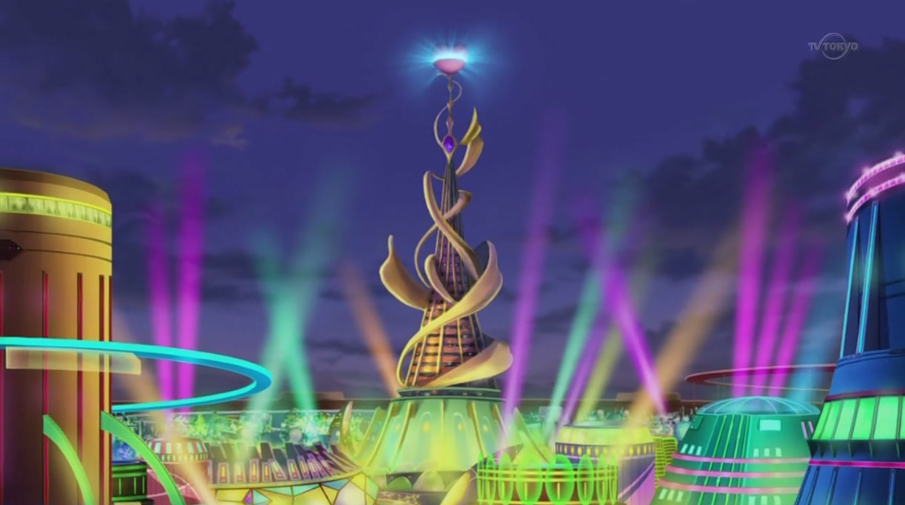. Rio soupira en se tournant vers tout le monde.
Akari: Qu'est-ce que c'était que ça ?
Akari demande à Rio. Cette dernière gloussa.
Rio: Je devais juste le lui dire. C'est tout.
Elle est ensuite devenue inhabituellement sérieuse.
Rio: Aucun de vous ne doit souffler un mot de ceci à mon frère ou à Kotori. Je vais leur dire moi-même quand je serais prête. C'est compris ?
Yuto: Il n'y a rien à dire.
Yuto disait, comprenant qu'il avait reçu le message.
Akari: Mes lèvres sont scellées.
Akari a ajouté.
Haru: Moi aussi.
Répondit la grand-mère Tsukumo.
Ruri: Bien sûr, je ne dirai rien.
Ruri a dit. Rio hocha la tête avec approbation. Comme elle se tournait pour partir aussi, elle a donné à Ruri un regard un peu plus compatissant.
Rio: Ruri, j'espère vraiment que ton propre frère va bien.
Ruri hocha la tête, semblant apprécier sa sympathie.
Ruri: Merci Rio. Moi aussi.
Après cela, et un au revoir amical, Rio s'est finalement éloigné et s'est dirigé vers sa propre maison. Yuto a ensuite tenu sa petite amie par le bras et lui a souri.
Yuto: Shun va s'en sortir. J'en suis sûr.
Disait Yuto, l'air positif. Ruri hocha la tête, en regardant vers ciel.
Ruri: Sois prudent... Nii-san.
(trad: Nii-san = Grand Frère)
Yuri traversa le couloir pour se diriger vers sa chambre à Academia. Il était toujours frustré que Ruri lui ait échappé et que le jeune Yuma l'ait tombé dessus comme il l'a fait. Yuri ne s'était jamais senti aussi humilié. Le garçon n'a certainement pas apprécié d'entendre à quel point le Professeur était furieux qu'il ait échoué dans sa mission.
Après le briefing, le Professeur a dit à Yuri de se reposer avant de se rendre dans la Dimension Synchro. Il espérait qu'il aurait plus de chance de capturer la fille qui y vivait.
Yuri: J'aurais probablement eu Ruri si son frère ne s'était pas mis en travers de mon chemin. Mais, le bon côté des choses...
Disait-il en sortant une carte de sa poche et en arborant un sourire malicieux.
Yuri: C'est que je n'aurai plus à m'inquiéter de lui.
Il a ensuite gloussé en regardant son lot de consolation :